打开备货列表，可以查看所有备货单，包括初下的未审核的，已审核的，已完成备货流程的。
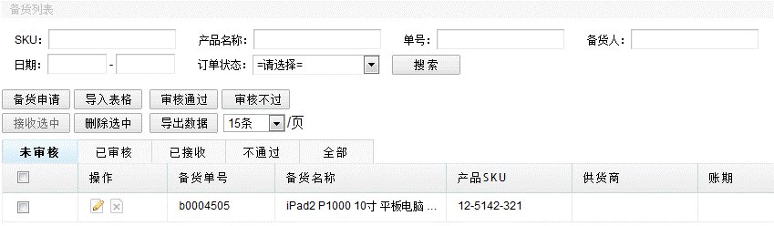
功能一、备货申请，若要申请备货，点击“备货申请”，带星号的为必填项，界面如下图：
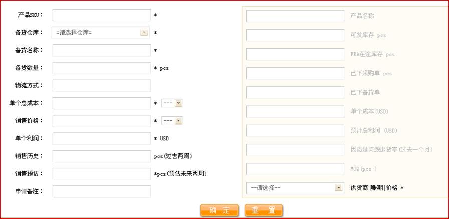
左栏须手动填写，右栏为系统根据用户填的信息自动获取显示。
左边栏：
产品SKU：输入须备货的产品的SKU。(输入后，右边自动调出产品名称，MOQ，单个成本)
备货仓库：输入SKU后，方可选择备货仓库。（选择仓库后，右边自动调出可发库存，已下备货单数，已下采购单数）。
备货名称：自定。
备货数量：自定。
物流方式：自定。
单个总成本：参考右栏系统调出的单个成本，用户自定，填写完选择右边的币别。
销售价格：自定，但应高于单个总成本，填写完选择右边的币别。
单个利润：单个利润是销售利润，计算公式：（销售价格-单个总成本）/ 销售价格。单个总成本，销售价格，币别三者共同决定单个利润，三者之一发生变化，单个利润就会发生变化。单个利润始终以USD显示。且系统会自动计算利润率，如下图：
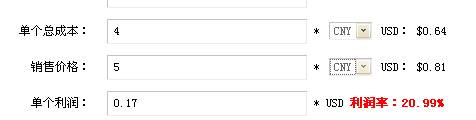
保存备货订单后，系统统一将单个总成本，销售价格转换为USD保存。
销售历史：过去两周的产品销量。
销售预估：预估未来两周产品销量，填写销售历史与销售预估，以便销售主管参考是否批准备货订单。
申请备注：自定。
右边栏：
产品名称：输入产品SKU后，系统自动生成产品名称。
可发库存：选择的仓库中的可发库存。
FBA在途库存：该处显示的是物料调拨由中国发往amazom仓库的在途数，系统通过接口（接口的参数配置在功能插件-接口配置中设置）自动抓取 。
已下采购单：显示的是在 “采购订单—未审核、已审核、已下单(未完成入库)”三个状态统计的总数，即提示备货人当下备货的SKU已经有多少个已做了采购单，如下图：
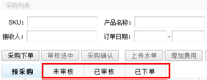
已下备货单： 显示的是在 “备货订单—未审核、已审核、已接收(未完成采购)”三个状态统计的总数，即提示备货人当下备货的SKU已经有其他人申请备货，如下图：
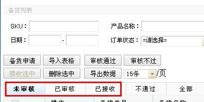
单个成本：显示的是“产品信息的销售成本”，在用户填完SKU后系统自动显示。
预计总利润：系统自动计算显示，预计总利润=单个总利润*备货数量。
因质量问题退货率：自定。
MOQ：显示的数值来源于“产品信息的MOQ”。
供货商|账期|价格：系统自动产生可选择的供货商代码、账期、价格。来源于“功能插件—账期信息”。账期即付款周期，供应商代码不同，账期价格不同，可点下拉键进行选择。如下图：
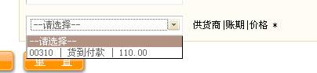
填写完毕即可保存，显示在列表未审核状态，等待审核，未审核的备货申请还可以编辑或删除，以上是介绍手工单条下申请的，另外可以导入表格批量申请，点击导入表格，下载系统订好的模板，填好信息后再上传即可。
功能二、审核备货，审核未审核的备货，可以在列表处勾上备货记录，选中记录的时候，系统会在功能按钮末对选中的记录进行总成本与总利润的计算，如下图，当然，有审核权限的用户才能看到。
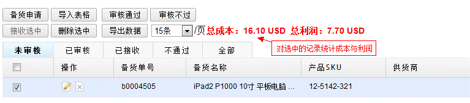
然后点击功能按钮的“审核通过”或“审核不过”完成批量审核过程，另外，也可以直接备货单号，在新的窗口打开详细，逐条审核，在审核过程中，若要修改数量才通过审核，可以直接点击数量直接编辑数量。
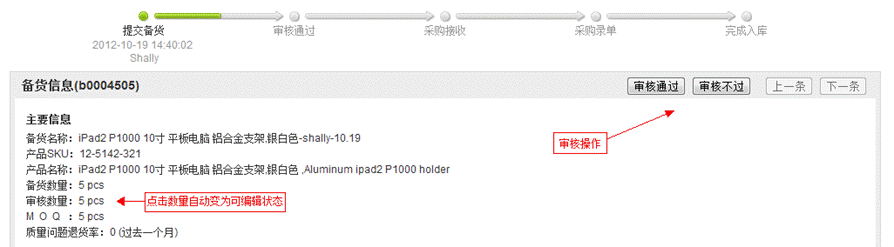
在备货详情页，可以查看此次备货的进度与每个节点的操作人和时间，很好地了解该备货单动态。
另外，在单条页面中，鼠标移至“采购录单”节点可查看采购批次详情。如下图：
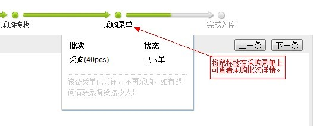
功能三、接收订单，此操作一般由采购部负责执行，对审核过的订单进行接收，接收过的订单可以进行采购下单，这里需要权限，选中列表的记录，点击“接收选中”即可，订单状态将由“已审核”变为“已接收”，已接收状态的备货单只能改变账期，其它信息都不能更改，如需更改，回退至未审核状态中编辑。
功能四、导出数据，未审核状态的备货单能导出表格。
最后附上备货订单里设置的权限，如下图
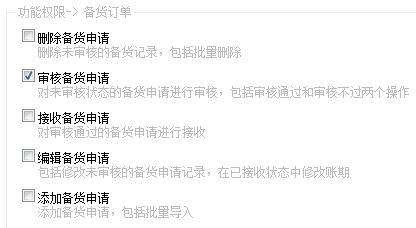
备货流程如下：
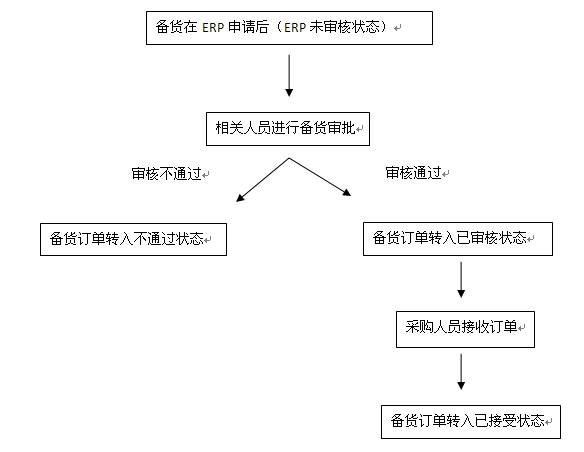